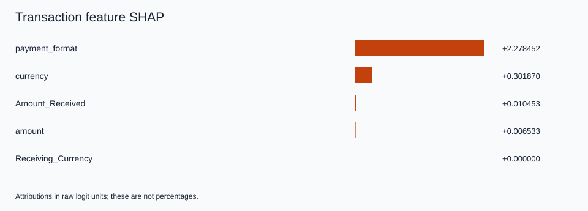
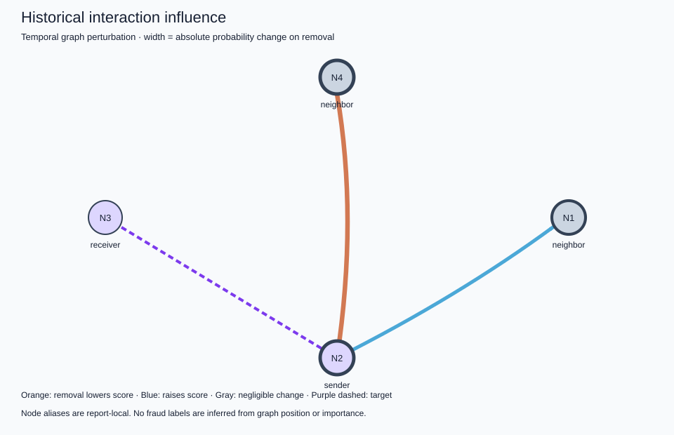

LOCAL TRANSACTION REVIEW
Fraud explanation
Fraud model score: 0.980461
Decision threshold: 0.35282
Result: FRAUD
Why was it flagged?
Top factor pushing toward fraud: Payment format: ACH
This was the strongest transaction feature pushing the score upward compared with the model’s reference transactions.
Other contributing factors
- Sending currency: EUR → increased the fraud score
- Amount received: 2,089.80 USD → increased the fraud score
What about the transaction history?
The historical interaction with the largest measured effect (event 3748490) raised the original fraud score. Removing it changed the score from 0.980461 to 0.969828. Other tested interactions had mixed effects.
Final explanation
The transaction was flagged because its score met or exceeded the alert threshold. Payment format: ACH was the strongest transaction feature pushing upward. The strongest tested historical interaction also pushed upward.
Uncalibrated model score. This explanation describes model behavior and does not establish that the transaction is actually fraudulent.
View technical XAI details
TECHNICAL XAI DETAILS
Transaction: 3748492
Bank: Key_Bank
MODEL PREDICTION
Fraud model score (uncalibrated): 0.980460862
Prediction: FRAUD
Decision threshold: 0.352819940
PREDICTION PARITY
Existing evaluation score: 0.980460823
XAI score: 0.980460862
Absolute difference: 3.92873868e-08
FEATURE ATTRIBUTION
Method: exact_empirical_interventional_shap
Units: raw_logit; account memory held fixed.
- payment_format = ACH: +2.278451630 (increased)
- currency = EUR: +0.301870307 (increased)
- Amount_Received = 2089.8: +0.010453498 (increased)
- amount = 1943.52: +0.006532844 (increased)
TEMPORAL EVIDENCE
Window: 8 completed batches
Relevant endpoint events: 2
Volume by currency: {'EUR': 7941.55}
Time since sender last seen: 254489.0 seconds
Time since receiver last seen: unknown
The current decoder does not directly use time deltas. Earlier deltas enter recurrent memory updates. A zero last_seen sentinel is reported as unknown.
TOP HISTORICAL INTERACTIONS
1. Event 3748490
Score change on removal: -0.0106329857
2. Event 3748491
Score change on removal: +0.00754159418
Showing 2 of 2 evaluated interactions.
GRAPH EVIDENCE
Evaluated historical edges: 2
Nodes represented: 4
Method: temporal graph perturbation
Retained events for fidelity: 2
Only selected updates retained inside bounded window; pre-window account memory remains intact.
FIDELITY
Retained-window-subgraph absolute score error: 0
Top feature ablation absolute score change: 0.216521661
Low feature ablation absolute score change: 8.36508206e-05
Random feature ablation absolute score change: 8.36508206e-05
STABILITY
Background-resampling top-feature Jaccard: 1.0
Background runs: 3; top-k: 3
LIMITATIONS
- Model explanations do not establish fraud or causality; scores are uncalibrated.
- Feature SHAP holds account memory fixed; static node-feature attribution is not implemented.
- Temporal graph perturbation is a bounded replay intervention, not GNNExplainer. Earlier anchor memory remains intact.
- Interventional SHAP hybrids can be unrealistic for correlated fields; exactness is relative to the sampled background.
- Legacy preprocessing reproduces current original evaluation and saved metrics; original fitted objects were not preserved.
- The original fixed-size batching and timestamp-tie behavior are preserved.
- Explains the final saved model; does not attribute predictions to individual training rounds, replay samples, or client updates. No formal differential privacy is implemented.


Research and debug outputs
All calculated features, interactions, evaluation results, limitations and provenance are preserved in the full engine output.